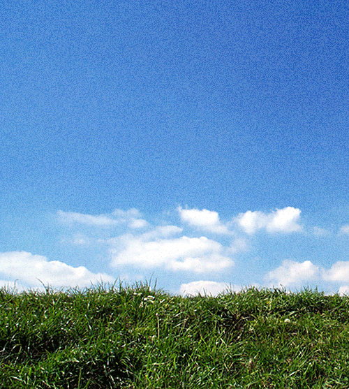
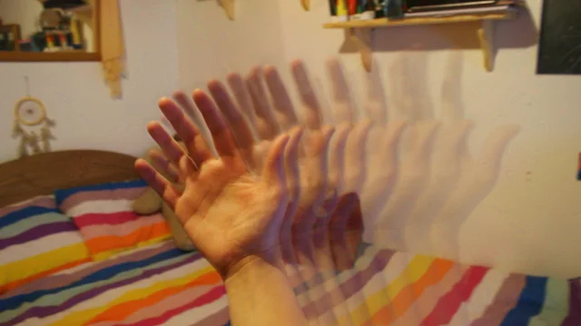
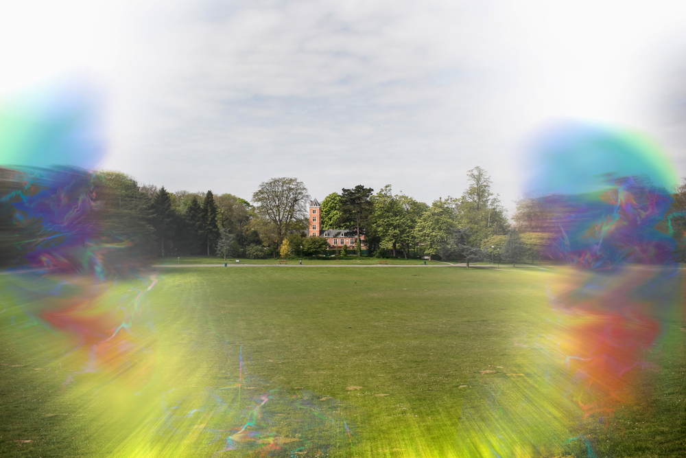

My Visual Snow
Preface
I'd like to preface by saying I am not a medical professional. The symptoms mentioned could be caused by serious life-threatening root causes. Please seek the help of GP/ENT/Neuropathologist, and request for brain & orbit MRI at the very least to eliminate dangerous root causes.
The confusion
2025 was an especially stressful time for me. I was acclimating in a new country away from my family and friends. I was experiencing some issues in my relationship. I was heavily bothered by deadlines from work. I flew to visit my sister for her wedding, being jet-lagged, heavily sleep deprived for a few days, I woke up one morning and something was different: there was a constant ringing sound in my head.
I tried to ignore the sound, sleeping it off, and it did get better after a few hours.
A week later I came back to my workplace. I looked at a white wall and I realized something was off; it wasn't just white, there were also many tiny dots flying all around it, as if buzzing or rather flickering, it was very faint.

(this is the closest animation I could find to my VSS)
Over the next few days I was having some trouble reading from far away, details were not as pronounced. I am short-sighted so I went in for a check-up and got new glasses confirming my eyesight had slightly worsened.
Then I was noticing the little flickering dots more and more. It seemed that when I closed my eyes I could still see what I was looking at just before closing them, as if the image was burned in my eyes. It wasn't as pronounced but it was definitely there.
Going to sleep at night I was having difficulty reading my Kindle, as if the lines from the previous page were also "burned" in my eyes, I could still see the lines lingering for a few more seconds even though I had already looked away.
That's when I was scared and realized something is not right.

(this is what my palinopsia looked like looking at my hands at night)
The diagnosis
Looking it up online, the name for it is Palinopsia, also known as persistent after-images.
I went to the eye doctor the day after. They were very thorough and ran a bunch of tests and they confidently told me: nothing is wrong with my eyes. I was happy at first. "But what about the after-images?". The doctor looked at me and said "I suggest you see a neuro-ophthalmologist. I suspect this is due to a brain tumor".
I was wrong before. Now I was scared.
Thankfully I have good insurance, I was referred to a neuro-ophthalmologist the same day, and she scheduled a brain MRI the next day. If you've never had an MRI before - you should know it's extremely safe, but very noisy and claustrophobic. They even gave me mirror glasses that were pointing to a TV screen with pandas eating bamboo and falling to help the time go by faster.
I'm not kidding when I say that for a good few days I was pretty sure this was it for me. The tiny dots were everywhere, I couldn't close my eyes and see darkness truly, and certain things would just keep flickering in my vision making me sick.
I came back a week later and the doctor showed me the results: "Your brain is absolutely fine. No tumors". I was relieved. She explained my symptoms match something called "Visual Snow Syndrome" (VSS). Which, according to her, is on the spectrum of migraine complexes, certain neurons and nerves are believed to be hyper-excited, and this is actually very akin to migraine auras.
I was confused - I don't have headaches at all. She smiled and said headaches are not always present in migraines, but I should be prepared for them and their auras.
At that point in time I was a mess, really. I kept reading about VSS and migraines online, and the more I read the more it scared me. How there's no cure. The way people in different forums on the internet are living with it for years and saying they're miserable. Some migraine auras can actually disable half your body, make you hear things or just hammer your head in pain. She advised me to focus on improving my anxiety as that is the lead factor in the intensity of the migraine. Because anxiety and migraines have a positive feedback loop. She also mentioned anti-epilepsy drugs I could try that are shown to work on migraines as well. At that stage I refused.
The following days I would go to sleep, close my eyes and see different shapes moving around. I'd wake up scared I was going to lose my eyesight. I was terrified that maybe some day I'll become as miserable as the people I read about online who have the same syndrome. I would read a lot of research papers about different drugs and supplements people tried only to discover that nothing is clinically significant and everyone who experienced it and is managing it is saying "just ignore it".
Living with it
As time went on I noticed the VSS more, and I would recognize different 'triggers' like looking at plain colored walls or at the sky on a clear day. I noticed it got worse when I was tired or not sleeping well enough. Heavy and oily foods would make me feel fatigued and that would increase the overall intensity. I started to get mild headaches and even one visual aura.

(this is the aura I had)
And the more anxious I was - the more snow I saw. At that point it's safe to say I was somewhat depressed.
After 1-2 months of this learning period (I even kept a migraine diary to correlate everything!), I read about a guy on Reddit who had the same thing, and he was happy to declare that he was cured - kind of. He decided to stop looking at it, focus on working out, enjoy his hobbies and live his life. After a few months his VSS was massively decreased to the point where he didn't really see it anymore. I think it inspired something in me, that maybe there was a chance? I decided to make the same habit.
I would avoid all the triggers I knew and collected already:
- I would go to sleep early when my body is feeling like it's tired.
- I would do cardio more often to get accustomed to increased heart rate and aim to a lower resting HR.
- I stopped trying to look for the VSS: different walls, looking at the sky, trying to search for it in specific places.
- I would avoid all social media and internet searches regarding VSS.
- I would take all supplements I knew I was missing (for me it included Vitamin-D, Folic Acid and Omega 3. I even took magnesium that helped me sleep better).
- I tried to disconnect the vision disturbances from the 'scared' feelings. While previously looking at it would make me scared, like something is not right. When I noticed it again I would say "Okay and?" as if to say this is not interesting.
- And Most importantly I would try to keep my anxiety under control: see my therapist, recognize anxiety triggers and patterns, talk and think through them.
It wasn't easy, I would still get headaches from time to time. I would go to bed and see shapes. I even started to experience tinnitus (of which roughly 75% of VSS patients report to experience as well).
The progress was similar to a sine wave. But there was a very obvious trend: I noticed the VSS less and less. Maybe the nerves were less and less excited, and maybe my brain just learned to tune it out more and more. Whatever the reason may be it really dawned on me one day when I realized I had gone the entire day from morning till evening without thinking about VSS once.
This had made me extremely happy and that was when I knew I was on the right track.
I still had days where VSS was all I could see. I would have migraines that would leave me suffering on the sofa avoiding all stimuli. And panic attacks that would jumpstart my entire brain. But they were getting more and more infrequent.
Today I can go whole days or a whole week without thinking about it, almost forgetting that I have it. Some days I have to really squint my eyes and try to see it. And somedays it's there but I am not bothered at all by it. It really took exposure therapy and living through it to understand that it's not scary and that living life with it is OK and manageable - so it could really "go away".
Some practical advice
- Sleep. A lot. This is a non-negotiable. Science doesn't understand why we need to sleep. Or rather why the functions that happen in our brain while we sleep can only happen while we sleep. But that's a fact. Sleep 8, 9, 10, 11 hours if you need to. Monitor your sleep quality. Get a sleep study if you need to. Fix your snoring. Get a CPAP if you need to. Sleep is by far the biggest factor.
- Eat healthy and rest. If you're like me - VSS came at a time in your life when you're heavily stressed. Your body is telling it needs time off, listen to it.
- Focus on your anxiety. No one can tell you how to do that, or if it's even fixable. But you can go to a therapist / psychiatrist and start by making progress and recognize what's causing you stress in your life. Do what you know helps you: work out, practice mindfulness, avoid stimuli like social media.
- I tried taking an anti-epilepsy drug for a week, prescribed by my doctor. It worked great but it was a trade-off: it made me feel different — lose my appetite, fewer sensations and feel overall. I asked my doctor to stop. But it was good to know there is an alternative. It taught me that there are always trade-offs in medicine and very rarely a clear win. Even taking ibuprofen would help with the current migraine but may cause a stronger "rebound" migraine later on.
Some reflections
- As cliche as this sounds: notice and appreciate the things you take for granted. Everything in life is temporary: things, the people around you, experiences. Appreciate what you have and make the most of your time.
- Our brain is a glorified feedback loop. Your consciousness is simply what you think about. Even if you fear something and want it to go away - you still think about it and that makes it stronger and more apparent. That's how fight-or-flight mechanics work. Understand it and make it work for you.
- Anxiety and stress affect everyone differently. Listen to your body, you know best how to operate it. Trust yourself.
Epilogue
I'm much better today and consider the entire thing almost behind me. Its something I live with day-to-day, but its not nearly as big as it used to be.
If you are reading this and you experience similar symptoms - don't be scared. I advise you to abolish all social media and internet searches regarding the matter and listen to your doctors instead of other people on the internet.
Please also know that this is very manageable. looking back at it, of the things that could happen to people, this is one of the more manageable ones. Reach out for support and talk about it. If you have no one to talk to or you'd simply like to connect please don't hesitate to send me an e-mail: boats-lastasdjflaing4i@iclasdasdasdoud.com.